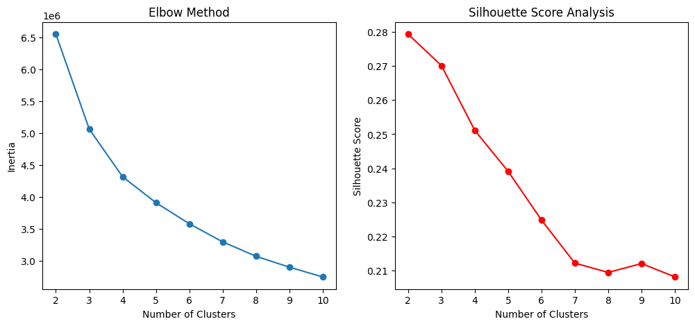

Project Overview
This project aims to segment patients based on their symptoms and medical history to assist in triage decision-making.
Using unsupervised learning, we explore how patients can be grouped based on similarities, which may help in personalized treatment plans.
Dataset Information
The dataset includes demographic, lifestyle, and health-related features:
- Age, Gender
- Cholesterol Levels
- Blood Pressure
- BMI
- Diabetes History
- Smoking Status
Clustering Methodologies
K-Means Clustering
K-Means was applied to segment the patients into different risk categories.
The **Elbow Method** and **Silhouette Score** were used to determine the optimal number of clusters.

Gaussian Mixture Model (GMM)
GMM was used to identify overlapping patient groups, allowing for soft clustering.
This helped in understanding how conditions transition between different levels of risk.

Hierarchical Clustering
This approach helped visualize patient subgroups in a **dendrogram**, giving insights into risk stratification.

Key Insights
After performing clustering, we analyzed the key characteristics of each patient segment:
- Cluster 0: Younger patients, low risk
- Cluster 1: Patients with moderate risk factors
- Cluster 2: High cholesterol and BP, higher risk
- Cluster 3: Severe cases, requiring urgent medical attention
Comparing these clusters with the original triage labels showed that clustering aligns well with real-world risk levels, but some refinements are needed.
Conclusions & Next Steps
Clustering provides valuable insights for triage, but real-world applications may require hybrid approaches:
- Using **supervised learning** for improved prediction.
- Applying **dimensionality reduction** to refine clustering results.
- Deploying the model in a real hospital setting for further testing.